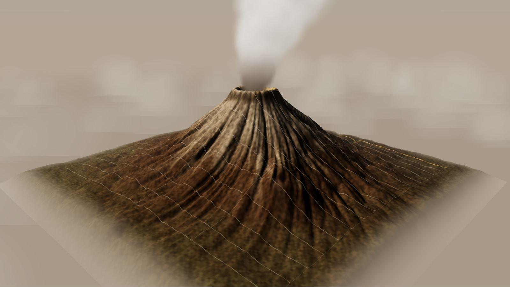

Magnetometría aérea
Mide variaciones del campo magnético terrestre para mapear conductos magmáticos, fallas y cuerpos mineralizados.
Campo total · gradienteGeofísica aérea · Inteligencia artificial
Leemos la Tierra desde el aire. Sensores aerotransportados y modelos de IA que revelan lo que ocurre bajo la superficie de volcanes, montañas y cuencas.
01 — Manifiesto
ESTRATO combina levantamientos geofísicos aéreos —con drones y aeronaves tripuladas— con modelos de aprendizaje automático entrenados para detectar anomalías magnéticas, térmicas y estructurales que el ojo humano pasa por alto.
El resultado no es solo un mapa: es un modelo vivo del subsuelo, navegable en 3D, que se actualiza con cada vuelo y ayuda a equipos de monitoreo, exploración y gestión de riesgo a actuar antes.

02 — Explorador
Un modelo 3D con datos geofísicos simulados. Cambia de capa, sigue el vuelo de levantamiento y deja que la IA marque dónde mirar.
Arrastra para orbitar · rueda o pellizco para acercar · doble clic para volar a un punto
03 — Tecnología
Cada método responde a una propiedad física distinta del subsuelo. Volamos varios a la vez y los fusionamos en un solo modelo.
Mide variaciones del campo magnético terrestre para mapear conductos magmáticos, fallas y cuerpos mineralizados.
Campo total · gradienteDetecta contrastes de densidad: cámaras magmáticas, cuencas sedimentarias y estructuras profundas.
Anomalía de BouguerCuantifica potasio, uranio y torio en superficie para cartografiar alteración hidrotermal y litologías.
K · eU · eThModelos digitales de elevación centimétricos, incluso bajo vegetación, para medir deformación y erosión.
MDE · nube de puntosMapas térmicos de fumarolas, grietas y flujos de lava para seguir la actividad volcánica en tiempo casi real.
LWIR · radianciaResistividad del subsuelo en profundidad para localizar acuíferos, arcillas de alteración y fluidos.
AEM · dominio del tiempo04 — Inteligencia artificial
Nuestros modelos aprenden la firma de cada fenómeno y la buscan en todas las capas a la vez.
Vuelos en rejilla con sensores sincronizados por GNSS/RTK. Cada línea registra miles de muestras por segundo.
Corrección diurna, nivelación de líneas, filtrado de ruido y fusión de sensores en una malla común.
Redes neuronales para inversión 3D, segmentación de estructuras y detección de anomalías con incertidumbre cuantificada.
Geocientíficos validan cada hallazgo. Entregamos visores 3D, informes y alertas integrables en tus sistemas.
Detección en vivo
0%
de la malla analizada. Las celdas resaltadas superan el umbral de probabilidad de anomalía (p > 0.8).
05 — Capas
Pasa el cursor —o toca— cada capa para ver qué sensor la revela.
06 — Aplicaciones
Deformación, desgasificación y calor, comparados vuelo a vuelo.
02Objetivos priorizados por IA antes de perforar un solo metro.
03Acuíferos y zonas de recarga mapeadas con resistividad aérea.
04Laderas inestables y lahares modelados para planes de respuesta.
05Sistemas hidrotermales caracterizados para energía limpia.
07 — Contacto
Cuéntanos el área, el objetivo y los plazos. Te respondemos con una propuesta de levantamiento y los sensores adecuados.